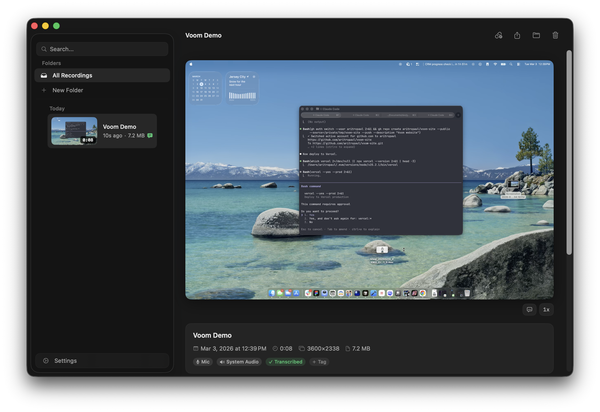

What it does
Screen + Camera + Mic
Voom captures any display at full retina resolution using HEVC hardware encoding. Record your screen with a picture-in-picture webcam overlay, or record camera-only. System audio and microphone are captured simultaneously.
Region Selection
Drag to select a portion of your screen to record. Or capture an entire display. Your choice.
Drawing Tools
Annotate your screen live during recording. Freehand, arrows, shapes, and text. Everything is captured in the final video.
On-Device Transcription
Powered by WhisperKit (distil-large-v3), running entirely on your Mac. Nothing leaves your machine. Transcription starts automatically when recording stops.
Trim, Cut, Stitch
Trim the start and end. Cut sections from the middle. Stitch multiple recordings together. All non-destructive, all local.
Filler Word Removal
Automatically detect and remove "um", "uh", "like" and other filler words from transcribed recordings. One click.
Folders, Tags, Search
Organize recordings into color-coded folders and tag them. Full-text search across titles and transcripts.
Share via link
Your Own Infrastructure
Upload recordings to your own Cloudflare account and get a clean share page with video playback, live captions, and a clickable synced transcript. Links auto-expire after 30 days.
Comments and Reactions
Viewers can leave timestamped comments and emoji reactions tied to specific moments in your recording.
Password Protection
Optionally require a password to view shared recordings. Add a call-to-action button overlay that appears when the video ends.
View Notifications
Get a macOS notification when someone watches your recording.
Free, forever
No Credit Card Required
Voom's sharing infrastructure runs entirely within Cloudflare's free tier. Workers handle the API and share page (100k requests/day). R2 stores your videos (10 GB, zero egress fees). D1 stores metadata and transcripts (5 GB). Daily cron triggers clean up expired links.
Set up in under a minute with the in-app self-host wizard, or deploy manually with wrangler. You'd only need a paid plan ($5/mo) if you somehow exceed 100k requests a day.
Voom vs Loom
Voom is free, forever — Loom is $15/user/month. Voom is 5 MB — Loom is 200 MB of Electron. Voom transcribes on-device — Loom uploads everything to their servers. Voom records unlimited length — Loom caps you at 5 minutes on free. Voom gives you drawing tools, trim, cut, stitch, filler word removal, and password protection — Loom charges extra for all of those.
Voom is open source under MIT. Fork it, it's yours.
Stack
Native macOS
Swift and SwiftUI with ScreenCaptureKit for capture, VideoToolbox for HEVC hardware encoding, and WhisperKit for on-device transcription on Apple Silicon. Cloud sharing runs on Cloudflare Workers + R2 + D1.
No Electron. No ffmpeg. No runtime dependencies. The app is ~5 MB.
Get Started
Download or Build
Download the latest release, or build from source:
git clone https://github.com/aritropaul/voom.git
cd voom/Voom
open Voom.xcodeprojRequires macOS 15+. Cloud sharing is optional — Voom works entirely offline.